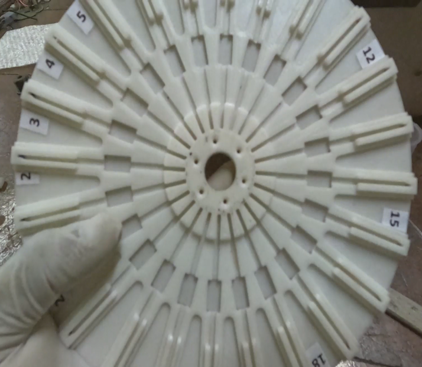
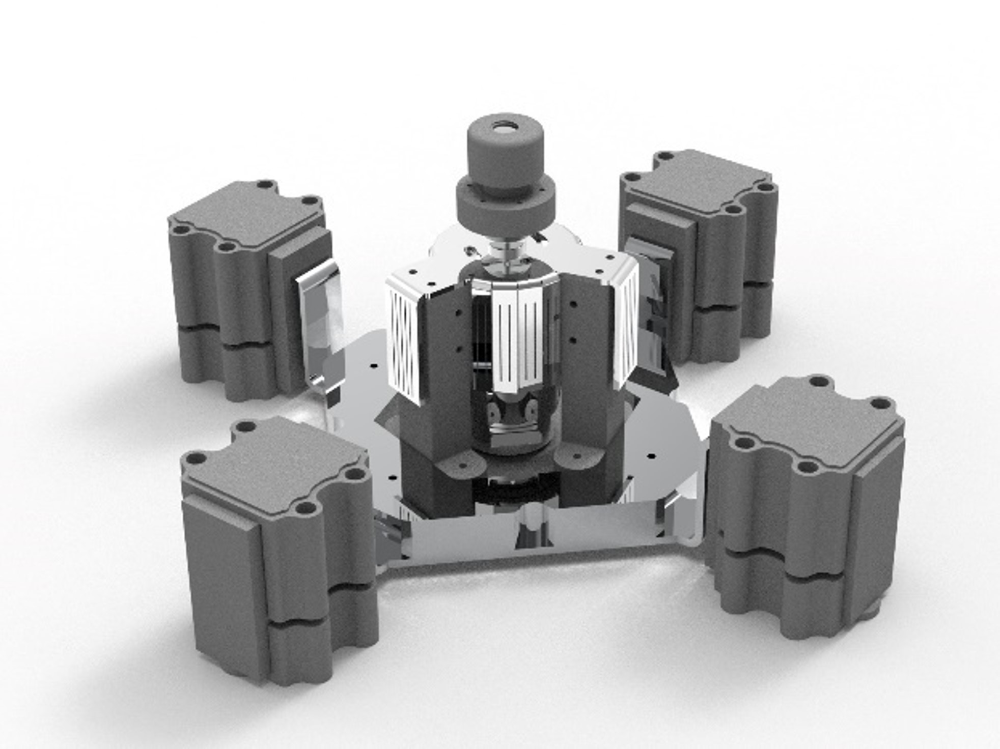
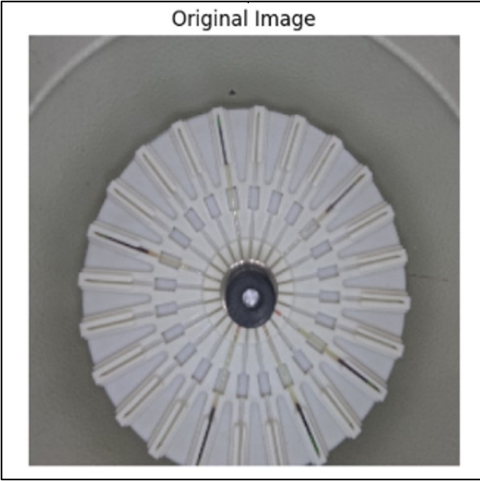
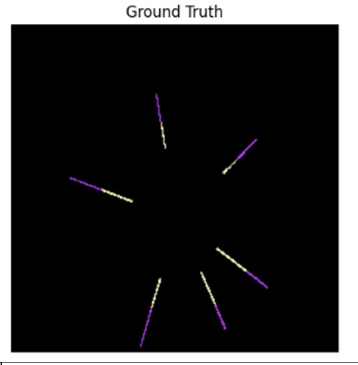
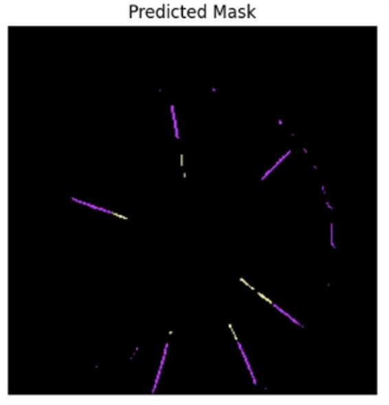
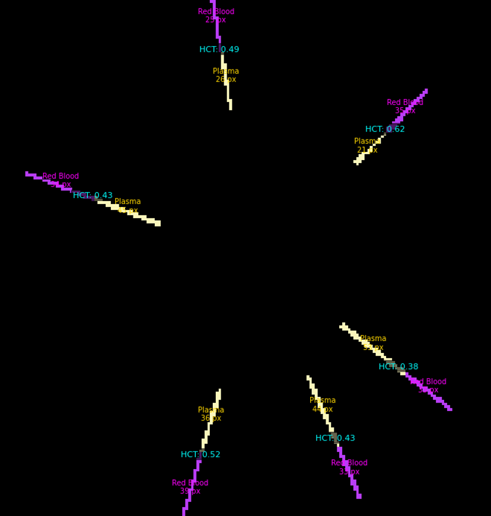

Vision-Based PCV Analyzer
My role
Led the three-person team. Owned mechanical design end-to-end — every rotor iteration, motor mount, vibration isolation stage, and the finished enclosure. Handled the hardware side of the vision pipeline: camera mounting, lighting geometry, and rotor redesigns to eliminate shadow and glare. Machine-learning training was handled by the teammate who owned the model.
What it does
A clinical instrument that replaces manual microhematocrit reading with an automated imaging pipeline. A lidless, passively-retaining rotor enables simultaneous multi-tube imaging; HCT is computed from RBC-column detection before and after centrifugation.
Validated against a clinical hematocrit analyzer on 50 samples: 1.535 pp MAE (vs 2.202 pp manual reading), 78% within CLIA tolerance (vs 46% manual), 45–47% faster overall processing.
The instrument

The rotor
My core design contribution. The lidless architecture removes the manual-lid obstruction that blocks top-down imaging in conventional hematocrit centrifuges. Centrifugal force wedges each capillary tube into a profiled retention ledge — no active clamping, no lid, and a clear optical window above every tube. Iterated through multiple full CAD revisions.



Vibration isolation
Four rubber/foam isolation stacks, sized against a Monte Carlo worst-case unbalance force. Delivered 3.2× RMS reduction and 10× cumulative-energy reduction at the rotor–motor interface. Design basis force peaks at partial loading (~12 tubes) — a non-obvious result of mass self-averaging.

Vision hardware integration
My contribution to the vision pipeline was the optical and mechanical side — background colour selection, lighting geometry, camera mounting, and iterative rotor redesigns to eliminate glare and shadow. The model itself (U-Net with ResNet-18 encoder, 0.878 mIoU) was trained by a teammate.
Final illumination choice came from a full factorial test: bottom diffusion light removed, top background light retained. This combination produced the least shadowing in the region of interest around each tube.




The hard part
FAILURE · SHADOWS AND GLARE KILLED CLASSICAL SEGMENTATION
Blue background scored highest on color-theory metrics but worst on real segmentation — plasma is too transparent against blue, and once tubes were inserted into the rotor, glare from the reflective walls degraded everything further.
Fix: Redesigned the rotor so the tube is supported only above the clay plug, removing the shadow source from the region of interest. Switched to a white background with top-only illumination after a full lighting combination test.
FAILURE · COUPLING-INDUCED MISALIGNMENT
Rigid-dynamic analysis showed base reaction force growing exponentially above 12,000 RPM. Root cause: a coupling between motor and rotor shaft that introduced RPM-dependent misalignment.
Fix: Removed the coupling. Redesigned into a chuck-based mount press-fitted directly on the motor shaft — iterated three times until a single-piece geometry eliminated tool-free disassembly risk and thermal build-up. An outrunner alternative was evaluated and rejected on thermal grounds.
FAILURE · COLD-START VIBRATION EXCEEDED DESIGN SPEC
The first prototype vibrated heavily — motor and rotor both contributed. The nut-based mounting loosened under cyclic load within minutes of operation.
Fix: Replaced the mounting strategy entirely. Cast-iron mass damper under the motor, chuck-based rotor mounting, and a four-stack rubber/foam isolator sized through genetic algorithm optimisation of stiffness and damping. Final displacement reduction: 17.6% peak, 23.75% average, 44.87% vibration energy.